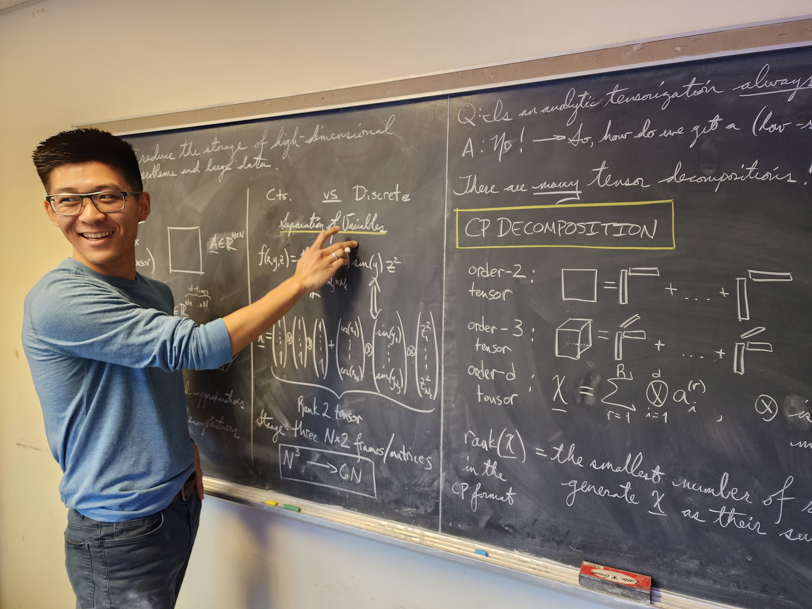

Over my years of teaching (as instructor, teaching assistant, and tutor), I have developed a working philosophy on how to build an inviting and constructive atmosphere for students that I help. At its core, I believe that the key to helping a student reach their greatest potential is to show (com)passion and be well articulated. To be an effective teacher, one must not only be well-versed in a specified topic, but also care about their students' education. For a student, thirty minutes of my time might be more important to them than it is to me. Therefore, although not always feasible, I try my best to accommodate my students. I am a MAA Project NExT Fellow (Blue '24) and enjoying discussing new ideas in (applied) mathematics education with other mathematics educators!
With compassion comes creating a safe learning environment where students feel heard, included, and less alone. These three points of conversation apply in many different ways! They could simply apply to a student feeling lost in the material. Does the student feel their concerns are heard? Does the student feel included in group assignments despite feeling lost? Does the student know that they are (surely) not alone in how they feel? Furthermore, these three points could apply to students from historically marginalized groups (e.g., female, Black, Latinx, LGBTQ+). Do these students feel heard? Do these students feel included? Do these students know they are not alone? I have found that creating a learning atmosphere that embodies this principles helps students feel comfortable being themselves and raising concerns.
As the world evolves, issues surrounding social justice and environmentalism are becoming increasingly important. Mathematics educators have a responsibility to engage students with these topics, educating the whole person and empowering leaders for a just and humane world. The traditional physics-based examples, although important, are by themselves no longer sufficient in a world where students are becoming increasingly exposed to climate change, racism, sexism, gun violence, gentrification, etc... It's not enough to just make the mathematics interesting. We also need to make the mathematics human. For example, an example in a calculus/differential equations class is modeling anthropogenic carbon emissions. However, you can take it a step further -- get students to think about the ethical, societal, and environmental implications of the mathematics (e.g., habitat destruction, rising sea levels, higher food prices, increasing numbers of climate refugees, food shortages that disproportionately affect poorer people). Several examples to help you get started can be found in the fantastic book, Mathematics for social justice: Resources for the college classroom by G. Karaali and L.S. Khadjavi.
My teaching style involves a cycle of "review, demonstrate, practice, clarify". I first review current material; then, I demonstrate an example; after my demonstration, students then attempt a practice problem; any questions or concerns are then clarified, hopefully to the students' satisfaction.